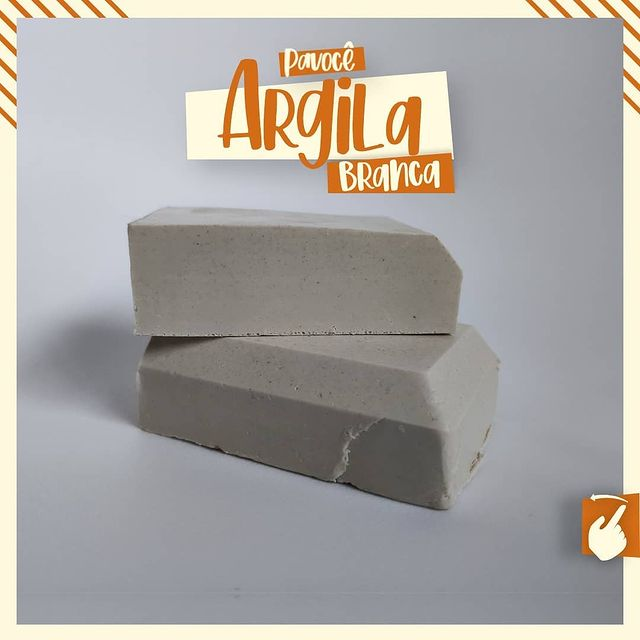
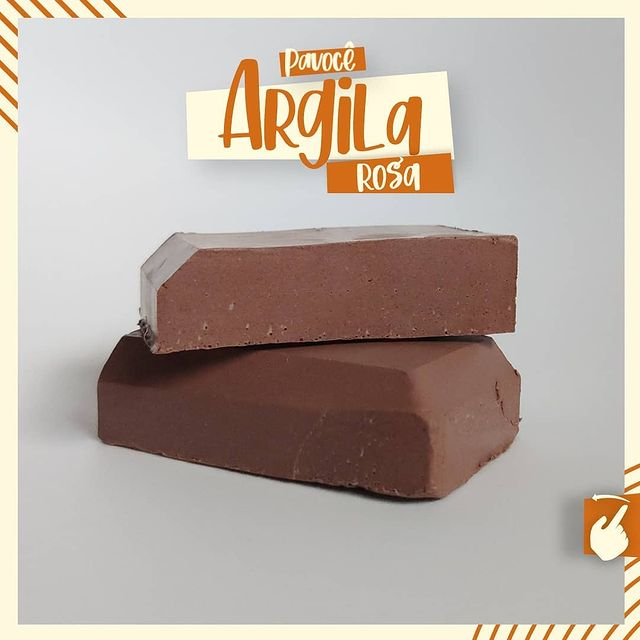
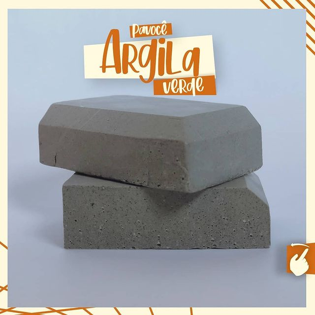

Argila Branca
Para todo tipo de pele, ajuda no clareamento, remoção de cicatrizes, revitalização da pele e combate a acne.
Além disso, a combinação da argila branca com o óleo vegetal de girassol tem o efeito reparador de tecidos por ser rico em Vitamina E, sendo atribuído como anti-idade.
Composição: Glicerina vegetal, Argila Branca, Óleo vegetal de Girassol, Óleo Essencial de Melaleuca.
⠀Argila Preta

Tem a capacidade de diminuir a produção sebácea da pele, e ação rejuvenescedora, além disso, atua na regeneração celular e fechamento de poros.
E com os óleos essenciais que potencializam ainda mais essa regeneração celular, o óleo de Palmarosa proporciona suavidade e Hidrata a pele, indicado para o tratamento de flacidez e rugas, junto com o óleo de jojoba que repõe a umidade perdida proporcionando firmeza, rico em Vitamina E e B, pode ajudar a agir como um escudo para proteger a pele contra os danos causados por fatores ambientais como a poluição.
Composição: Glicerina vegetal, Argila Preta, Óleo vegetal de Jojoba, Óleo Essencial de Palmarosa.
⠀Argila Rosa
A Argila Rosa é a mistura de argila branca com a vermelha, deixando o sabonete de argila Rosa mais rico. ideal para peles sensíveis e delicadas com tendências alérgicas.
O sabonete de argila rosa é o melhor amigo do Melasma, trás em sua composição o Óxido de ferro que é ótimo para o tratamento do Melasma, que são aquelas manchas indesejáveis que surgem quando menos se espera.
Composição: Glicerina vegetal, Argila Rosa, Óleo vegetal de Amêndoa doce, Óleo Essencial de Lavanda.
⠀Argila Verde
Ideal para peles oleosas e acneicas, também para peles normais com manchas de espinhas, pois tem propriedades adstringentes, esfoliantes e antibactericidas.
Além da limpeza, a combinação da argila verde com o óleo essencial de Melaleuca potencializa ainda mais no tratamento das acnes ajudando a prevenir e reduzir as cicatrizes deixada pelas acnes.
Composição: Glicerina vegetal, Argila Verde, Óleo vegetal de Copaíba, Óleo Essencial de Melaleuca.
⠀